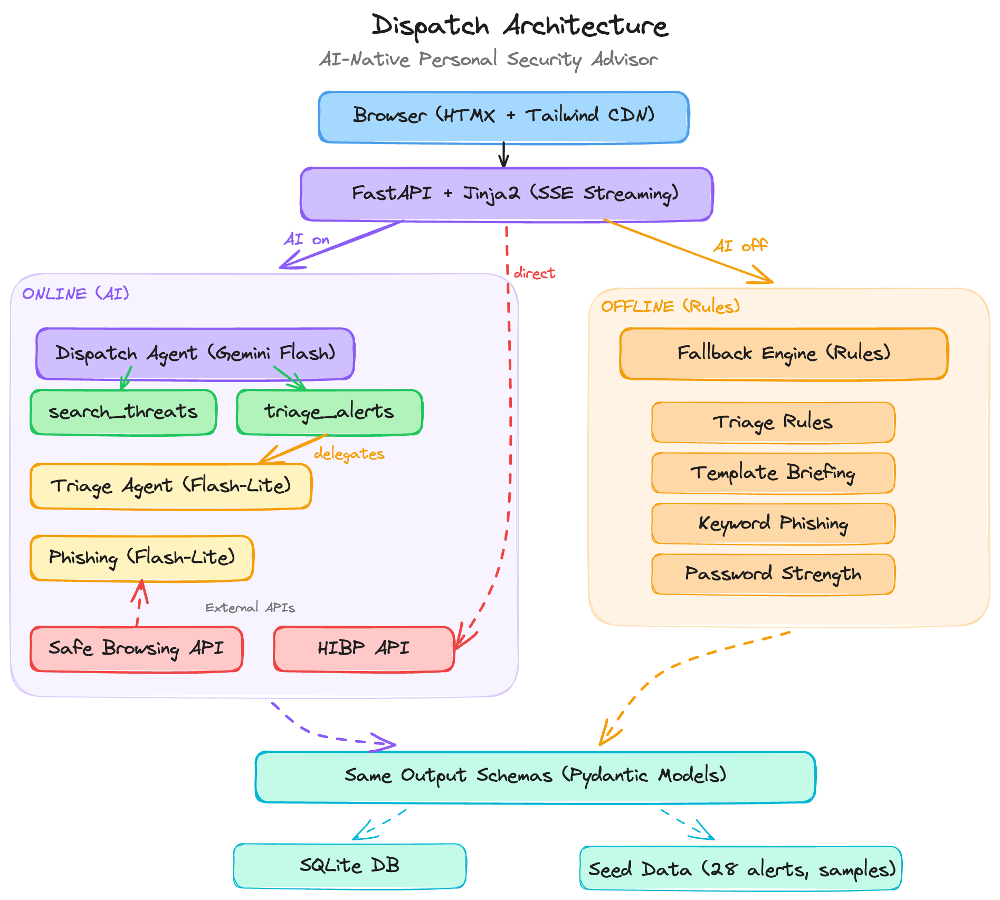

Dozens of threats every week. Which ones actually matter to you?
Personalized threat analysis for your digital footprint.
// Your region, your services, your concerns
// Every alert scored for personal relevance
// A briefing with actions, not a wall of data

// Passwords never touch any AI model
// Every AI feature has a complete rule-based fallback
// Every tool call logged with model, input, output, latency
// 55 automated tests, all running fully offline
// Live threat feeds from NVD and CISA
// Zip code level localization
// Historical briefing comparison over time
Thanks for reviewing. I had a lot of fun building this.